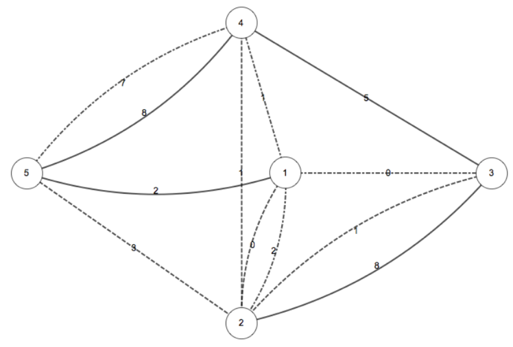
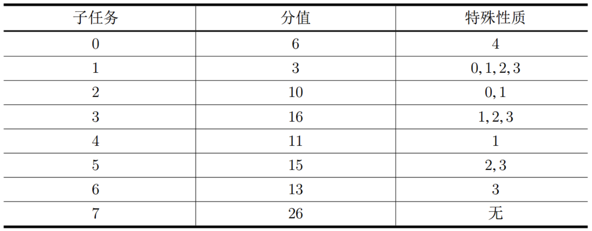

【样例说明】
下图为样例中 M 城的传送站和传输线路情况。其中点和虚线交替的线条、虚线条和实线条分别表示第一组、第二组和第三组通道。

一种可行的方案是选择 $a=2,b=5$，这样的使用者数量之和为 $(3)+(8+5+1)+(2+1+7)=27$。
【子任务】
对于所有数据，$2≤n≤10^5,0≤w≤10^{12}$。
特殊性质0：任意两组通道构成完全相同。
特殊性质1：第二组通道和第三组通道构成完全相同。
特殊性质2：对于第二组的每一个传送站，最多只有两个通道可以到达它，且编号为 $x,y$ 的传送站之间通过一条通道直接连接充要条件是 $|x−y|=1$。
特殊性质3：对于第三组的每一个传送站，最多只有两个通道可以到达它。
特殊性质4：$n≤3000$。

本题共31个测试点，每个子任务对应测试点如下：
子任务0对应测试点1−7；
子任务1对应测试点8；
子任务2对应测试点9−11；
子任务3对应测试点12−14；
子任务4对应测试点15−17；
子任务5对应测试点18−21；
子任务6对应测试点22−25；
子任务7对应测试点26−31；
【提示】
在两组通道中，可能都包含了连接传送站 $x,y$ 的通道，此时我们认为这两条通道是不同的。
特殊性质中， A 组通道和 B 组通道的 ‘‘构成完全相同’’ 是指：如果在 A 组中 $u,v$ 之间存在一条使用人数为 $w$ 的通道，那么在 B 组中 $u,v$ 之间一定也存在一条使用人数为 $w$ 的通道。是否相同与描述方式与描述顺序均无关。即在构成完全相同的两组通道 A 和 B 中，通道输入的顺序不一定相同，每条通道的端点的输入顺序也不一定相同（对于 A、 B 组中一条连接 $u,v$ 的使用人数为 $w$ 的通道，一种可能出现的输入为： A 组通道中输入 $uvw$，而 B 组通道中输入 $vuw$）。
 Comet OJ
Comet OJ